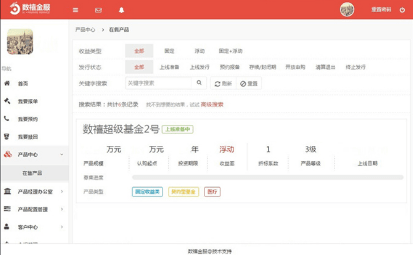
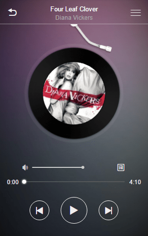
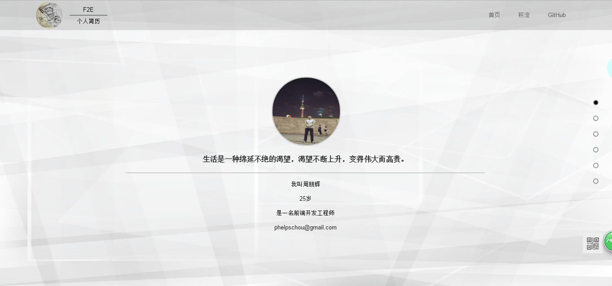
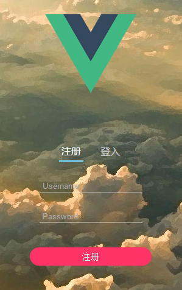

公司的核心业务，是一套全面的CRM解决方案。
主要使用 HTML、CSS、BootStrap、jQuery完成所有页面的重构工作，后期配合产品部门对页面进行完善。
维护公司客户的网站，随时解决客户的问题，开发学校迎新页面，公司pica系统的管理维护。
工作中主要用到HTML 5、CSS 3、jQuery等技术，这个阶段主要是处理很多琐碎分散的问题，能够独当一面。
仿某商城首页项目，完全按照该网站首页样式制作，高精度还原，主要运用技术：HTML 5、CSS 3、jQuery。
界面优雅炫酷的音乐播放器，依赖百度 FM的海量音乐资源，支持 频道切换、下一曲\上一曲、播放\暂停、音量控制、进度控制、歌词滚动显示 等功能，主要运用技术：HTML 5、CSS 3、jQuery。
将 无缝轮播、回到顶部、懒加载 几个常见效果整合到一个网页中，并使用RequireJS做模块化加载，r.js进行打包合并，主要运用技术：HTML 5、CSS 3、jQuery、RequireJS。
一个优雅简洁的在线个人简历，支持全屏滚动，使用gulp完成自动化构建，改进工作流，是一个不错的个人信息展示页面，主要运用技术：HTML 5、CSS 3、jQuery、gulp。
这是一个带登入和注册功能的TodoList应用，使用leancloud存储用户数据，主要运用技术：HTML 5、CSS 3、Vue.js、leancloud、webpack。
能够编写语义化的 HTML，模块化的 CSS，能保证写出结构清晰的页面
能实现较复杂的页面布局和动画
了解 HTML5 / CSS3 常用新特性，并能用于日常工作中
熟悉BootStrap的使用
了解 Less / Autoprefixer 等CSS预处理和后处理工具
了解响应式媒体查询，能编写响应式页面
能运用模块化、面向对象的方式编程
熟悉this、new概念，能手绘完整的原型链图，了解闭包的使用，异步编程
了解Ajax、原生DOM和jQuery DOM的操作，了解事件模型
知道同源策略，并能用几种常见方法跨域
了解常见设计模式，并能运用于日常工作代码中
熟练使用jQuery，能编写jQuery插件
了解AMD、CommonJS规范
能使用RequireJS模块化加载代码
能使用Gulp构建前端工作流
熟悉npm包的使用，可以使用nodejs工具完成基本的前端构建
了解HTTP工作原理
知道常见状态码及其含义
能读懂HTTP请求报文和响应报文
熟悉常用的Linux命令
对性能优化有一定认识
日常使用 Git、Svn 与 Sublime Text / WebStorm 进行开发